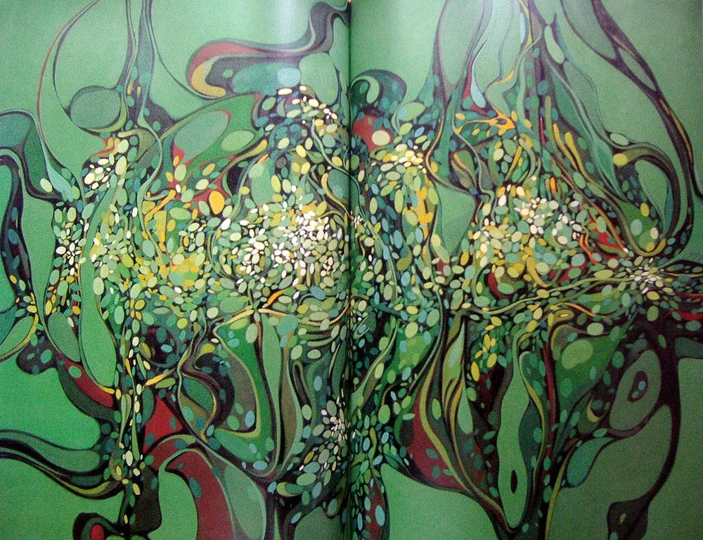
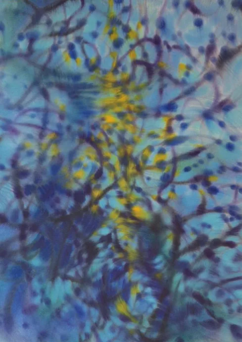

作品
1991–1995
情慾思維Psyche & Eros


1996–1998
內景Interior Scene



本系列另有作品可洽詢。聯絡
1999
心象State of Heart


2000–2014
植相Realism (Zhi Xiang)


2007–2009
隨行Take a Walk
隨著行走／不在已知的探尋軌跡／隨著行走／思想暫停流轉／隨著行走／回首已是煙消雲散／我在此刻蒸發／留下的印記圖騰／什麼都是／什麼都不是梁至青，2009 創作自述


2010
流動Flowing


本系列另有作品可洽詢。聯絡
2010
雲山水Cloud, Mountain, Water


2011–2012
花－形色Flower — Form and Colour


2012
千年之華Millennial Splendour


本系列另有作品可洽詢。聯絡
2023 起，進行中
琉金光燦Ryukin (working title)

2024
偶發 abiogenesisAbiogenesis





情慾思維 No.1 1991
情慾思維 No.20 1994
情慾思維 No.29
情慾思維 No.30
情慾思維 No.32
內景 No.3（三連作） 1996
內景 No.21
內景 No.23
內景 No.25
內景 No.27
內景 No.29
內景 No.32
內景 No.35
心象 No.13
心象 No.47
心象 No.98
芭蕉葉 2000
芭蕉葉 2001
樟樹 2003
綠竹
野薑花 2004
相思山 已收藏
芭蕉 2011 已收藏
芭蕉林 已收藏
隨行 No.36 2007–2009 已收藏
隨行 No.38 2007–2009
隨行 No.33 2007–2009
隨行 No.31 2007–2009
隨行 No.32 2007–2009
隨行 No.23 2007–2009
隨行 No.24 2007–2009
隨行 No.28 2009 已收藏
隨行 No.26 2009 已收藏
隨行 No.1 2009 已收藏
隨行 No.5 2009 已收藏
隨行 No.13 2009 已收藏
隨行 No.14 2009 已收藏
隨行 No.17 2009 已收藏
流動 No.2 2010
流動 No.4 2010
流動 No.6 2010
流動 No.11 2010
流動 No.12 2010
流動 No.13 2010
流動 No.16 2010
流動 No.18 2010
雲 2010 已收藏
山 2010 已收藏
水 2010 已收藏
白玫瑰-1 2011 已收藏
白玫瑰-2 2011 已收藏
粉橘玫瑰-1 2011 已收藏
香水百合 2011 已收藏
洋紅葵百合 已收藏
黃色姬百合-2 2012 已收藏
孤挺花系列-1 2012
千年之華-1 2012 已收藏
千年之華-3 2012 已收藏
千年之華-4 2012 已收藏
光變 No.6 2017–2018
光變 No.8 2017–2018
光變 No.14 2017–2018
光變 No.18 2017–2018
光變 No.20 2017–2018
光變 No.21 2018 已收藏
光變 No.24 2017–2018 已收藏
光變 No.28 2017–2018
光變 No.29 2017–2018
光變 No.33 2017–2018
光變 No.34 2017–2018
琉金光燦 No.01 2023 已收藏
偶發 No.1 2024
偶發 No.2 2024
偶發 No.3 2024
偶發 No.4 2024
偶發 No.5 2024
偶發 No.6 2024
偶發 No.7 2024
偶發 No.8 2024
偶發 No.9 2024
偶發 No.10 2024
偶發 No.11 2024
偶發 No.12 2024
偶發 No.13 2024
沒有符合的作品。